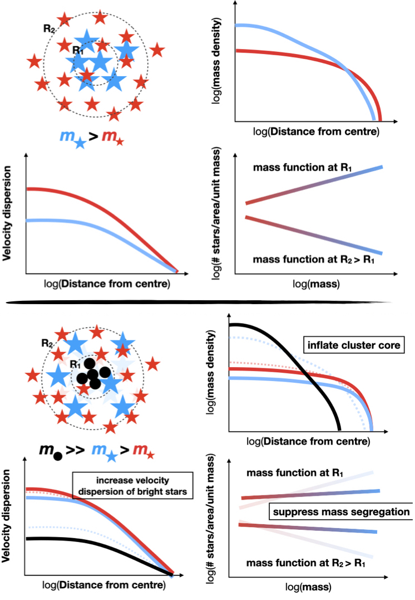

Dynamical modelling of globular clusters
Some of my group's recent work has focused on using dynamical models to tackle questions about the dark side of globlular clusters.
With models that capture the trend towards equipartition of different mass species and the resulting mass segregation in globular clusters
that are dynamically evolved due to two-body relaxation, we can
infer the mass distribution within
clusters (e.g. Hénault-Brunet et al. 2019), their global (initial) stellar mass function (e.g. Baumgardt, VHB, et al. 2023 , Dickson, VHB, et al. 2023), their content of dark stellar
remnants, including stellar-mass black holes (e.g. Hénault-Brunet et al. 2020, Dickson, Smith, VHB, et al. 2024), and also to address claims for the presence of
intermediate-mass black holes in the centre of globular
clusters.
I am also interested in how data from upcoming and future instruments/facilities can further shed light on globular clusters and their interaction with the Milky Way. I recently led the Near-Field Cosmology Science Working Group for the Phase 0 study of the proposed Canadian-led CASTOR mission.
